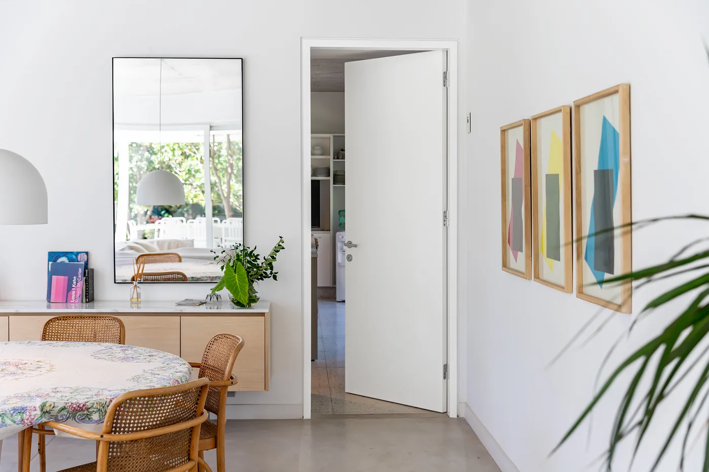
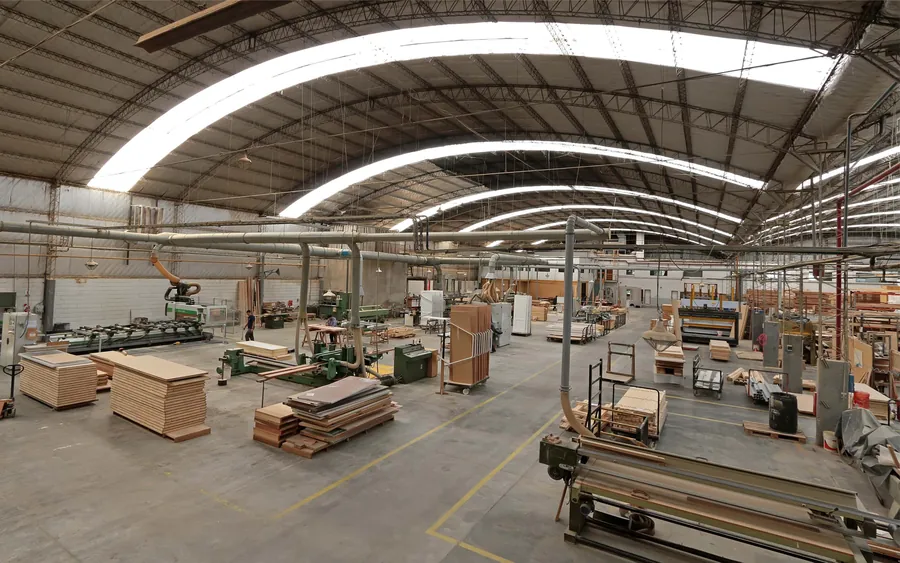

01 / Fabricación propia
Fabricamos puertas.
Pensamos en espacios.
En Marroncelli fabricamos puertas de interior con distintas líneas, terminaciones y sistemas de marcos. Cada elección forma parte del carácter de un ambiente.
Desde la fabricación de las piezas hasta su terminación, cada puerta reúne decisiones sobre materiales, diseño y el modo de integrarse a la obra.
